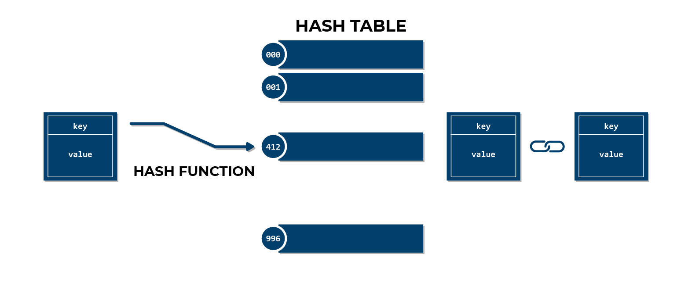

About the hash table data structure and its implementation in C++.
October 31, 2022
When handling large amounts of data, storing them in a list or an array is no longer a viable
option. Finding or removing a given element takes more and more time. This is where hash tables come in: no
matter the size of the data set, the time it takes to find or remove an element is constant. In this
article, we will look at how hash tables work and go over an implementation in C++.
How do hash tables work?
A hash table is simply an array in which elements are added one after the other. However, they
are not appened to the end of the array, but rather to a specific index, determined using the hash function.
An element of the hash table must have two fields: a key and a value. The key is fed to the
hash function, which returns an index. The element is then stored in the array at this index. That way, when
the user wants to find an element, he only has to provide the key, and will be able to retrieve the value in
constant time.
Resolving collisions
All hash functions are deterministic, which means that for a given key, the hash function will
always return the same index. However, it is possible that two different keys will return the same index.
This is called a collision. This means that multiple elements can be stored at the same index. When this
happens, the hash table must be able to handle it.
There are several ways to handle collisions. The one we will use here is called chaining. When
a collision occurs, the element is stored in a linked list at the index of the collision. When the user
searches for this element, the program will iterate through the linked list until it finds the element with
the correct key. This admittedly takes more time than a simple array, but the lists are so short that it can
still be considered constant time.
A summary of the hash table data structure.
Making the right choices
Multiple parameters can influence the performance of a hash table. First, the size of the
array must be chosen wisely. If it is too small, collisions will occur more often, if it is too large,
memory will be wasted and searching will take longer. The size of the array should also be a prime number,
as this will reduce the number of collisions. To choose a good size, this formula can be used:
\[n \approx n_e \cdot 1.3\]
\[n \text{ Table size, prime number}\]
\[n_e \text{ Estimated number of elements}\]
The choice of the hash function is also important. Different hash functions will yield
different results, and some will be better than others. They often use 'magical numbers' that were chosen by
trial and error. Although I don't think changing them is worth the effort, they can still be parameters to
play with.
My implementation in C++
The objectives
I wanted to create a hash table that could be used in pretty much any project. I wanted it to
be quick and easy to use, that is why I chose C++. I also wanted it to be able to handle any type of data,
which implies the use of templates, and function overloading.
To demonstrate my project, I used the table to store data from NASA's JPL Small-Body Database.
It contains over 1,250,000 solar system bodies, each one identified by a unique SPK-ID. I retrieved the data
using the Query API, kept only the fields I was interested in, wrote them in a CSV file, then appened them
in the hash table, using the SPK-IDs (integers) as keys.
The Code
The code is available on my
GitHub. I will go over the most important parts here.
The HashTableElement class
Before we can create the hash table, we need to create the elements that will be stored in it.
The HashTableElement class is a template class that can store any type of data. It has two fields: a key of
type K and a value of type V. It has different constructors to avoid throwing unwanted errors. It will be
used to create subclasses, or directly for simple applications.
template <class K, class V>
class HashTableElement{
public:
HashTableElement(const K& k, const V& v) : key(k), value(v) {};
HashTableElement(const K& k) : key(k), value() {};
HashTableElement() : key(), value() {};
~HashTableElement() {};
K getKey() const {return key;};
V getValue() const {return value;};
protected:
K key;
V value;
};
The HashFunction class
They table itself cannot be created with a proper hash function. This class contains all the
different algorithms, as well as a method that will call the right one. It is based on an enum that contains
all the different names of hash functions. The 'hash()' method, which is overloaded to handle any type of
key, will call the right hash function based on the give enum value. The class also has an attribute that
stores the size of the array, as it is used in every hash function.
enum HashFunctionType {POLYNOMIAL_ROLLING, DJB2, DIVISION, INTEGER_32};
class HashFunction{
public:
HashFunction(unsigned long int n, HashFunctionType hash_type) : table_size(n), type(hash_type) {};
unsigned long int hash(const string& key) const;
unsigned long int hash(const int& key) const;
unsigned long int polynomialRolling(const string& key) const;
unsigned long int djb2(const string& key) const;
unsigned long int division(const int& key) const;
unsigned long int integer32(const int& key) const;
private:
unsigned long int table_size;
HashFunctionType type;
};
The HashTable class
Now we finally have everything we need. The HashTable class is also a template. Its attributes
include the table itself, which is an array of lists, its size, its hash function, and some other values
used for statistics. It has a constructor that takes the size of the array and the hash function as
parameters. It has the usual methods to insert, search, and remove elements, as well as functions to print
the table and its statistics.
template <class T>
class HashTable{
public:
HashTable(unsigned long int n, HashFunctionType hash_type);
~HashTable() {delete[] table;};
void insert(const T& element);
void find(T* element) const;
void remove(const T& element);
void printStatistics() const;
void print() const;
private:
list<T>* table;
size_t size;
HashFunction hash_function;
unsigned long int entries;
unsigned long int empty_cells;
unsigned long int collisions;
bool isInTable(const T& element) const;
};
Handling errors
Some functions can fail for different reasons. In that case, they throw an exception. This
makes the code easier to debug, as the user can catch the exception and print the error message. The classes
are also templated, as they display the key of the element that lead to the error. Hence, the <<
operator should be overloaded depending on the type of key used.
Results
I wrote a main function to demonstrate the program. It imports the data from the SBDB, and
insert them one by one in the hash table. This operation takes some time, but once it is done the program
runs smoothly. The statistics of the table are printed right after.
To search the database, the user enters the SPK-ID of an object. The result is displayed
instantly. Some famous objects are: Oumuamua (SPK-ID 33788040), Ceres (SPK-ID 2000001), and
67P/Churyumov-Gerasimenko (SPK-ID 1000012).
Loading SBDB...
SBDB loaded.
Creating hash table...
Hash table created.
HASH TABLE STATISTICS:
| Table size......................1627601
| Number of entries...............1251734 (77% of table size)
| Number of empty cells...........754099 (46% of table size)
| Number of collisions............378232
| Avg nb of elements per cell.....1.43
Enter SPK-ID: 2000001
SPK-ID: 2000001
Full Name: 1 Ceres (A801 AA)
Kind: Asteroid Numbered
Primary Designation: 1
Name: Ceres
Minimum Orbit Intersection Distance: 1.59 au
Diameter: 939.40 km
GM: 62.63 km3/s2
Density: 2.16 g/cm3
Albedo: 0.09
As always, the code is available on my
GitHub. If you wish to use it, you will find a more in
depth tutorial in the README file.